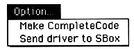

Make CompleteCode
All data including the driver currently running on the target board is made into one file based on the current map. The difference from the MakeSoundBinary menu is that it has already transferred the data to the target board.
Note that this function issues a license when compiling, so if you have a map but it is not active, you are not licensed.
Send driver to SBox
Send the sound driver for SBox. Since the transmission address is from address 0, this menu cannot be executed once it is moved regardless of the driver.
If you want to launch a customized driver, place the driver file with the file name "SDDRVS.TSK" in the same folder as the sound simulator and execute this menu.